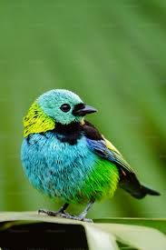

Comenzar mi camino en la música con la guitarra fue el primer paso de una evolución constante, permitiéndome explorar la armonía y el ritmo desde una perspectiva íntima y personal. Sin embargo, mi curiosidad me llevó a buscar la disciplina y la cohesión del mundo clásico al integrarme en una orquesta como violinista, donde aprendí la importancia de la precisión y el trabajo en equipo bajo la batuta del director.
Con el tiempo, mi trayectoria dio un giro vibrante hacia los sonidos metálicos y la energía de las calles al unirme a una banda de marcha, cambiando las cuerdas por la potencia del trombón. Esta experiencia ha sido el complemento perfecto para mis momentos de introspección, los cuales dedico a practicar piano ocasionalmente, manteniendo viva una versatilidad que define mi identidad como músico en formación.
Actualmente me encuentro realizando mi etapa lectiva en el SENA, donde estoy desarrollando habilidades técnicas y profesionales. Formo parte del programa de formación Análisis y Desarrollo de Software (ADSO), enfocado en la creación de soluciones tecnológicas y el dominio de diversos lenguajes de programación.
